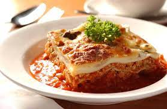

Lasagna

Here's how to make the perfect lasagna with these simple steps.
Ingredients:
- Meat;
- Onion and Garlic (an onion
and two cloves of garlic);
- Tomato Products
(a can of crushed tomatoes,
two cans of tomato sauce,
and two cans of tomato paste);
- Sugar
(two tablespoons of white sugar);
- Spices and seasonings
(this lasagna recipe is flavored with fresh parsley,
dried basil leaves,
salt,
Italian seasoning,
fennel seeds,
and black pepper);
- Lasagna noodles;
- Cheeses
(parmesan,
mozzarella,
and ricotta cheese);
- Egg.
Steps:
- Make the meat sauce;
- Cook the noodles;
- Make the ricotta mixture;
- Layer the recipe according to the recipe instructions;
- Cover with foil and bake;
- Let the lasagna rest before serving.
How to layer lasagna:
- Meat sauce;
- Noodles;
- Ricotta mixture;
- Mozzarella slices;
- Meat sauce;
- Parmesan cheese;
- Repeat the layers, then top with the remaining Parmesan.
How to cook lasagna:
The assembled lasagna should take about 50 minutes to cook
in an oven preheated to 375 degrees F.
Cover it with foil for the first 25 minutes,
then let it cook uncovered for the final 25 minutes.
Also, it's important to let the lasagna rest at room temperature
for about 15 minutes before you cut into it.